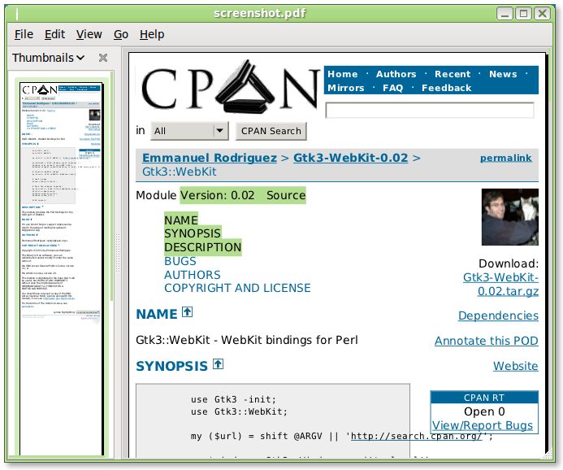

Execute JavaScript (pic)

by
Emmanuel Rodriguez
It's an open source web browser engine (not a browser).
A fork of KHTML (Konqueror) by Apple.
Composed of 2 sub libraries:
With bindings for multiple languages (including Perl).
Safari, Google Chrome, Epiphany, Konqueror
Mail.app, Entourage (OS X), Steam
iOS, Android, Kindle
Cocoa, Qt, Gtk, SDL, WxWidgets, Win32, Adobe AIR
If it quacks like a duck, acts like a duck, ...
Multiple bindings exist for WebKit in CPAN:
Automatic language bindings generated at runtime
GNOME desktop uses this for all its new bindings
Material for a separate talk
Besides writing a web browser? :)
Custom GUIs with HTML, CSS and JS (ex: control rooms monitors)
Web page profiling (ex: page size, resources, download time)
We can rewrite/automate the functionalities of the Web Inspector
use Gtk3 -init;
use Gtk3::WebKit;
# Build a WebKit frame
my $view = Gtk3::WebKit::WebView->new();
$view->load_uri('http://search.cpan.org/perldoc?Gtk3::WebKit');
# Widget packing
my $window = Gtk3::Window->new('toplevel');
my $scrolls = Gtk3::ScrolledWindow->new();
$scrolls->add($view);
$window->add($scrolls);
$window->set_default_size(800, 600);
$window->show_all();
$window->signal_connect(destroy => sub { Gtk3->main_quit() });
# Main loop
Gtk3->main();Code: browser.pl
# Execute a JavaScript command as soon as the page is loaded
$view->signal_connect('notify::load-status' => sub {
# Wait for the page to be loaded
return unless $view->get_uri and $view->get_load_status eq 'finished';
# Execute jQuery (the page must have jQuery loaded already)
$view->execute_script(q{
$('img').hide();
});
});Code: javascript.pl
Use Cairo for saving a page as PDF
# With Gtk3 we can use offscreen rendering!
my $window = Gtk3::OffscreenWindow->new();
$window->add($view);
$window->show_all();
# Save the page as PDF file once loaded
$view->signal_connect('notify::load-status' => sub {
return unless $view->get_uri and $view->get_load_status eq 'finished';
# Use Cairo to grab a PDF (we can also use SVG, PostScript or PNG)
use Cairo::GObject;
my $width = $view->get_allocated_width;
my $height = $view->get_allocated_height;
my $surface = Cairo::PdfSurface->create("screenshot.pdf", $width, $height);
my $cr = Cairo::Context->create($surface);
$view->draw($cr);
Gtk3->main_quit();
});Code: pdf.pl
Run with: xvfb-run --server-args="-screen 0 1024x768x24" pdf.pl
Text is selectable!
Show the download time of each resource
use HTTP::Soup;
# Get the session that's responsible for all HTTP access made by WebKit GTK
my $session = Gtk3::WebKit->get_default_session();
# Track all download requests
$session->signal_connect('request-started' => sub {
my ($session, $message, $socket, $resources) = @_;
# A new download request starts
my $url = $message->get_uri->to_string(0);
my $start = time;
# Track the when the download finishes
$message->signal_connect(finished => sub {
my $elapsed = time - $start;
my $status_code = $message->get('status-code') // 'N/A';
print "$url $elapsed seconds, status code $status_code\n";
});
});Code: resources.pl
Control which pages can be loaded or not (clicks ONLY)
use URI;
my $allowed_dest = URI->new($uri)->host_port;
# Intercept all web pages requests and reject all requests that will bring us
# to an external web site. This works only for the iframes and links that have
# been clicked by the user.
# *** JavaScript and CSS are not blocked! ***
$view->signal_connect('navigation-policy-decision-requested' => sub {
my ($view, $frame, $request, $action, $decision) = @_;
my $uri = $request->get_uri or return;
return if $uri eq 'about:blank';
# Accept the request only if we stay in the same site
my $dest = URI->new($uri)->host_port;
return if $dest eq $allowed_dest;
# Reject all requests going to a different site
print "Access denied $dest\n";
$decision->ignore();
return 1;
});
Code: nanny.pl
Control which resoure can be loaded or not (works on everything)
use URI;
my $allowed_dest = URI->new($uri)->host_port;
# Block ANY resource that goes to an external site. This works for all resources.
# Even for resources that are built at runtime through JavaScript.
$view->signal_connect('resource-request-starting' => sub {
my ($view, $frame, $resource, $request, $response) = @_;
my $uri = $request->get_uri or return;
return if $uri eq 'about:blank';
my $dest = URI->new($uri)->host_port;
return if $dest eq $allowed_dest or $dest =~ /\.(ultra)?bstatic\.com:/;
# Block requests to an external URI, 'about:blank' is never downloaded.
print "Access denied $dest\n";
$request->set_uri('about:blank');
});Code: uber-nanny.pl
use Gtk3::WebKit ':node_types';
# Show which elements match the given CSS rules
find_elements_for_selectors(
$view->get_dom_document->get_body,
'div.featpostcard', 'td.c2name > a.hotelname'
);
sub find_elements_for_selectors {
my ($node, @selectors) = @_;
# Check if the current element matches the CSS rules
if ($node->get_node_type == ELEMENT_NODE) {
foreach my $selector (@selectors) {
next unless $node->webkit_matches_selector($selector);
printf "%s matches %s\n", $node->get_tag_name, $selector;
}
}
# Recurse through the child nodes
my $child_nodes = $node->get_child_nodes;
my $length = $child_nodes->get_length;
for (my $i = 0; $i < $length; ++$i) {
my $child = $child_nodes->item($i);
find_elements_for_selectors($child, @selectors);
}
}Code: dom.pl
Find all elements that define CSS rules (<style> and <link>)
use Gtk3::WebKit ':xpath_results';
# XPath to find 'style' and 'link stylesheet'
my $doc = $view->get_dom_document;
my $xpath_results = $doc->evaluate(
'//style | //link[@rel="stylesheet" and @type="text/css" and @href]',
$doc,
$doc->create_ns_resolver($doc),
ORDERED_NODE_SNAPSHOT_TYPE,
undef
);
# Show the CSS
my $length = $xpath_results->get_snapshot_length;
for (my $i = 0; $i < $length; ++$i) {
my $element = $xpath_results->snapshot_item($i);
my $tag_name = $element->get_tag_name;
if ($tag_name eq 'STYLE') {
my $css_content = $element->get_first_child->get_text_content;
print "CSS: $css_content\n";
}
elsif ($tag_name eq 'LINK') {
my $href = $element->get_attribute('href');
print "LINK: $href\n";
}
}Code: xpath.pl
Find more scripts in github: https://github.com/potyl/Webkit